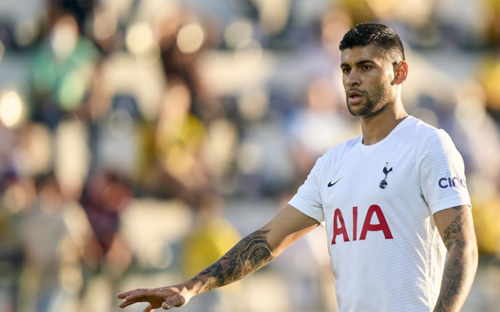

LESIÓN COMPLICADA PARA LO CELSO
El mediocampista de Villarreal aguarda resultados que arrojen luz sobre la gravedad de su lesión en el bíceps femoral de la pierna derecha. El jueves se sabrá si está en condiciones de ser parte de la Selección Argentina.

CUTI CON MOLESTIAS
El defensor del Tottenham se hizo estudios que confirmaron la leve lesión muscular. Tendrá alrededor de 10 días de recuperación antes de Qatar 2022.
MESSI EN SU MEJOR MOMENTO
Lionel no para de lucirse en el PSG y su equipo lo disfruta en las semanas previas a la cita mundialista.
VOLVIÓ PALACIOS
Una buena noticia fue el regreso de Exequiel Palacios a la titularidad en el Bayer Leverkusen. El ex River podría sumarse a la lista ante la lesión de Lo Celso.
¿LLEGA DYBALA?
El cordobés sufrió un grave desgarro en el recto femoral. Sin embargo es muy probable que pueda sumarse a los convocados.
PREOCUPA DI MARÍA
Fideo tuvo que salir lesionado en el último partido de la Juventus. El parte oficial dice que sufrió un desgarro en el muslo y estará de baja aproximadamente 3 semanas.
FIXTURE |
||
|---|---|---|
| MAR 22/11 - 07.00hs | ||
 ARG ARG |
- | ARA |
| SÁB 26/11 - 16.00hs | ||
| ARG |
- | MEX |
| MIE 30/11 - 16.00hs | ||
 POL POL |
- | ARG |